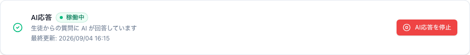
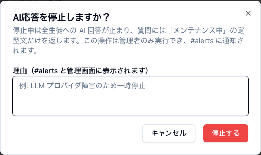

この章で分かること
7-1 は管理者（塾の責任者）向けです。7-3 以降はスタッフ全員に読んでほしい内容です。
「AI が変なことを言っている」「費用が異常に増えている」「個人情報の事故が起きた」ときに、 数秒で全生徒への回答を止められます。プログラムの変更も設定作業も要りません。
紐付けの誤りが見つかったため一時停止）— 任意ですが必ず書いてください

| 項目 | 内容 |
|---|---|
| 誰ができるか | 管理者のみ。スタッフはカードを見られますが、押すと
AI応答の停止・再開は管理者のみ実行できます と表示されます |
| 止まると何が起きるか | 🤔 も付かず、質問には定型文だけが返ります： 「いまメンテナンス中でお返事ができないんだ しばらく経ってからもう一度質問してね。」 AI は呼ばれないので、費用も止まります |
| 通知 | Slack の #alerts チャンネルに「操作者・理由・時刻」が投稿されます（設定してある場合）。
状態が変わったときだけ通知されます |
| 再開 | 同じカードの AI応答を再開。カードが緑の 稼働中 に戻ります |
| 理由の表示 | カードに「理由」「最終更新（操作者）」が残るので、他のスタッフも状況が分かります |
止めたまま忘れないでください。 停止中は全生徒が使えません。ダッシュボードを開けばカードが赤い 停止中 になっているので、 朝いちばんに開く習慣にしておけば取りこぼしません（第 2 章 2-1）。 理由を書いておけば、あとから見た人も「まだ止めておくべきか」を判断できます。
どうしても停止ボタンで止められないときは、Slack アプリ側でイベントの受け取りを止める・ アプリの公開を止めるといった手段になります。この作業は開発者に依頼してください。
| 項目 | 内容 |
|---|---|
| 上限 | 生徒 1 人あたり、直近 1 時間に 10 回 |
| 数える単位 | 生徒ごとです（チャンネルごとではありません） |
| 超えると | 次の定型文が返ります： 「今日はたくさん質問してくれてありがとう！ちょっと休憩して、1時間ほどしてからまた質問してね」 |
| 費用 | かかりません。AI を呼ぶ前に判定しているので、超えたぶんは課金されません |
| 解除 | 自動です。「直近 1 時間」の数え方なので、古い質問が 1 時間より前になれば、その分だけまた使えます |
| 記録 | エラーログに RATE_LIMITED（深刻度 情報）として残ります。
ふだんは非表示なので、深刻度を すべて にすると見えます |
| 数え方の対象 | 生徒への回答が成功した回数です。内部処理（会話の要約など）は数えません |
| 上限を変えたい | 画面からは変えられません。開発者に相談してください（プログラムの変更になります） |
生徒から「使えない」と言われたら、まずこれを疑ってください。
試験前などで質問が集中すると、ふつうに到達します。エラーログで深刻度を すべて にして
RATE_LIMITED を探せば確認できます。異常ではありません。
保護者への説明にそのまま使える内容です。 このアプリは、外部の AI サービスに送る情報を意図的に絞って作られています。
| 情報 | AI に送るか | 説明 |
|---|---|---|
| 生徒の氏名 | 送らない | 設計として、AI に渡す情報から氏名を外しています。
氏名は回答の質を上げず、外部に渡す必要のない情報だからです。 ただし例外が 1 つ：スタッフが「AI 用プロフィール」や「学年」欄、レポート本文に氏名を書いた場合は、 その文字はそのまま送られます。だから書かないでください（第 3 章 3-2） |
| 生徒番号などの内部の管理番号 | 送らない | AI にとって意味のない文字列で、送る理由がありません |
| Bot が呼びかけに使う表示名 | 送らない | 管理画面の設定として保存されるだけです |
| 保護者のメールアドレス | 送らない | 管理画面に記録として保存されるだけです（メール送信の機能もまだありません） |
| 生徒の Slack アカウント名・メールアドレス | 送らない | AI に渡す情報には含まれません |
| 学年 | 送る | 説明の深さと言葉づかいを学年に合わせるために必要です（中 1 と高 3 で説明を変える必要があります） |
| AI 用プロフィールに書いた文章 | 送る | 書いた内容がそのまま送られます。学習の状況を伝えるための欄です |
| 質問の文章 | 送る | 回答するために必要です |
| 同じスレッドのこれまでのやり取り | 送る | 会話の続きを理解するために必要です。長くなった場合は前半を要約した形で送ります |
| 承認済みレポートの一部 | 送る | その質問に関係のある部分だけが抜き出されて送られます。レポート全文が毎回送られるわけではありません |
| 生徒が送った写真 | 送る | 写真の内容を読み取るために送ります。ただし埋め込まれた撮影情報は取り除いてから送ります（次の 7-4） |
スマートフォンで撮った写真には、写真そのものとは別に 撮影した場所（GPS の位置情報）・端末の機種・撮影日時などが埋め込まれていることがあります。
じゅくAI は、生徒から写真を受け取った直後にこれらの情報を取り除いてから、保存と AI への送信を行います。 つまり生徒の自宅の位置情報が外部に渡ることはありません。
取り除くのは余分な情報だけで、写真そのものを作り直しはしないため、画質は落ちません （数式や手書き文字の読み取りに影響しません）。
写真が大きすぎる場合は、AI に送る前にサイズを小さくすることがあります（費用を抑えるためです）。 数式や手書き文字が読める解像度は保たれます。
この前提が崩れる唯一の原因は、紐付けの間違いです。 チャンネルと生徒の対応を間違えると、しくみは正しく動いたまま「間違った生徒の情報」を使ってしまいます。 だから紐付けの操作だけは慎重に行ってください（第 3 章 3-7）。 月に 1 回、チャンネル設定の一覧を見て対応を確認する運用をおすすめします。
| 立場 | 見られるもの | できないこと |
|---|---|---|
| 生徒 | 自分のチャンネルの会話だけ（Slack の中） | 管理画面にログインできません。他の生徒の情報は見られません |
| スタッフ | 管理画面のすべての画面（生徒情報・会話ログ・レポート・エラー・利用状況・紐付け） | 緊急停止の操作 |
| 管理者 | スタッフと同じ ＋ 緊急停止の操作 | — |
このリンクは、それ単体であなたのアカウントに入れてしまう「鍵」です。
これで全 7 章です。目次に戻る。 機能の追加や設定の変更が必要になったときは、開発者に相談してください。